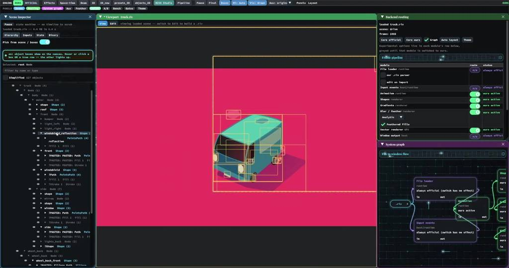
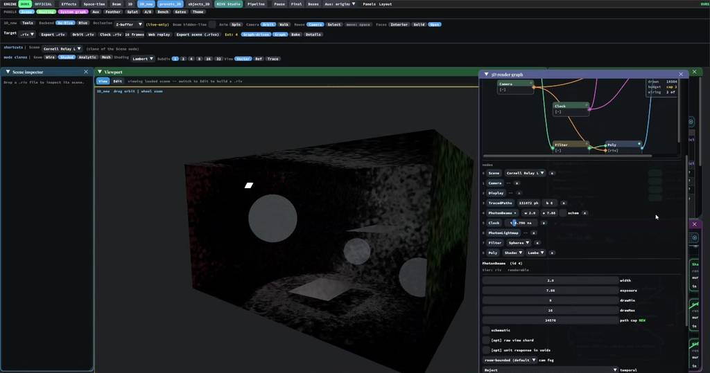
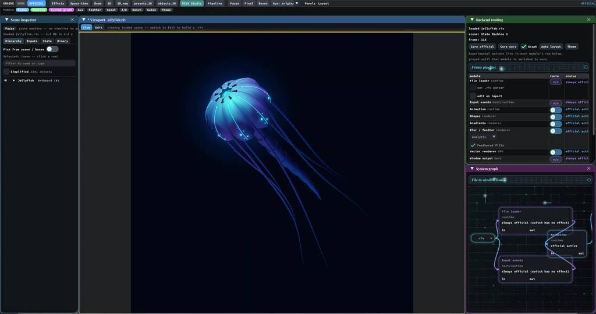

RIVX
My starting question was simple: could I turn a real-time 3D render into a .riv animation? Rive is a system for interactive vector graphics; I wanted to see how far its drawing and animation vocabulary could carry a rendered world. That question led through keyed geometry, NPR contours and live GPU hosts to a custom backend, a small editor and a light-transport laboratory.
- ◇
Turn a render into animation
Reuse geometry as keys, retain sampled glass appearance, or reconstruct NPR shading as contours.
- ↔
Keep the GPU computation live
Explore both GPU Canvas documents and ordinary Rive paired with a WebGL/WebGPU host.
- ∿
Build the drawing tools
Compare backends, extend curves and soft fields, edit elements and stack content-aware effects.
- L
Add light transport
Trace photons and optical time; retain volume splats or bake surface illumination into textures.
Follow a surprising connection far enough to build it, see it and understand its limits.



Browser sample · retained paths drawn by official Rive
Browser sample · retained paths drawn by official Rive
Draws with
Artifact
Export
Purpose
Made with
Demonstrates
Wheel over the scene may zoom; move outside it to scroll the page.

Suspended · activate to run; playback pauses after the full panel leaves the vertical viewport.